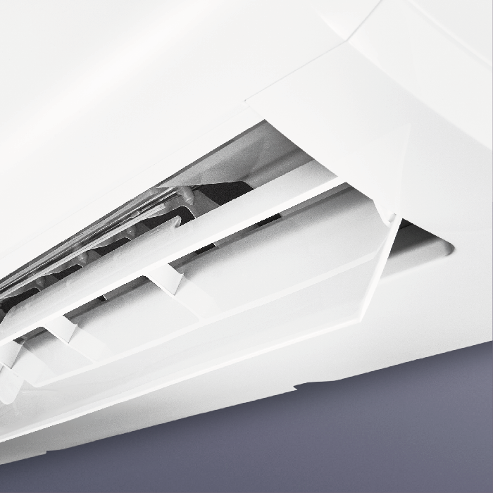
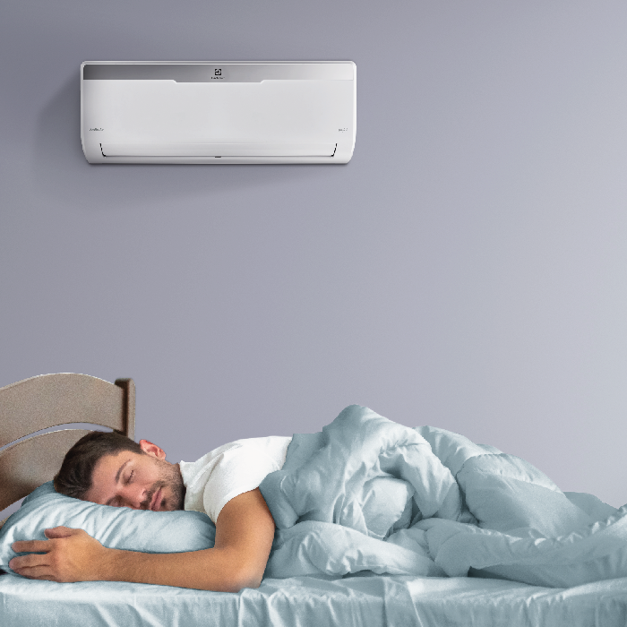

Potrivit experților, aparatul de aer condiționat din seria Arctic Air este cea mai bună soluție pentru crearea unui climat confortabil, lucru confirmat de câștigarea Red Dot Award 2019.
Aerul pe care îl respirăm
În fiecare zi, o persoană respiră 10.000 de litri de aer, așa că aerul curat este baza sănătății noastre. În majoritatea orașelor, situația de mediu nu este cea mai bună, iar ventilația de multe ori nu funcționează corect în apartamente. Electrolux oferă soluții pentru a vă ajuta să creați un microclimat optim și să îmbunătățiți calitatea aerului în casa dvs.
De ce este atât de importantă calitatea aerului
Dacă locuiți într-un oraș mare, atunci știți că nici aerisirea regulată nu va face aerul din cameră mai curat. Aerul din stradă este poluat cu: gaze de eșapament, reactivi, praf, compuși chimici nocivi.
Tehnologie care ține de calitatea aerului
Aparatele de aer condiționat Electrolux nu numai că răcesc sau încălzesc aerul din casa dvs. atunci când este necesar. Le pasă de calitatea aerului tău: sistemele speciale de filtrare și tehnologiile moderne te ajută să te protejezi pe tine și pe cei dragi de germeni, viruși și praf dăunător. Alegând soluții inteligente de la Electrolux, faceți o investiție nu numai în condiții confortabile, ci și în sănătatea dumneavoastră.
4D - curgere: aer în direcția dorită
Datorită acestei funcții, puteți schimba de la distanță direcția fluxului de aer în 4 direcții, ceea ce vă va permite să creați microclimatul ideal acolo unde vă aflați.


Operație silențioasă
Nivelul de zgomot al dispozitivului este de numai 22dB (A), o astfel de funcționare silențioasă se realizează datorită caracteristicilor de proiectare ale unității interioare. Acum puteți fi sigur - nimic nu va deranja nici măcar cel mai sensibil somn.
Configurați și uitați
Funcția de memorie a ferestrelor menține răcirea în direcția dorită de fiecare dată când porniți aparatul de aer condiționat.